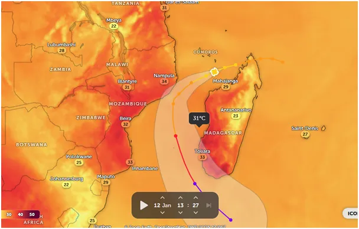
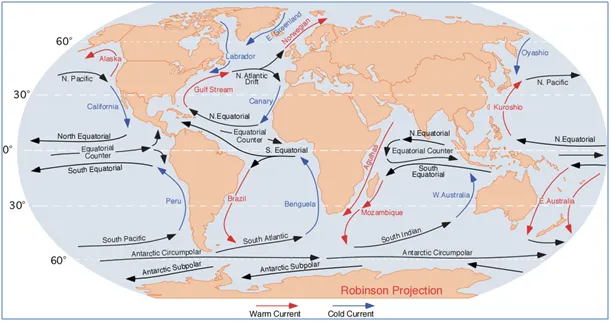
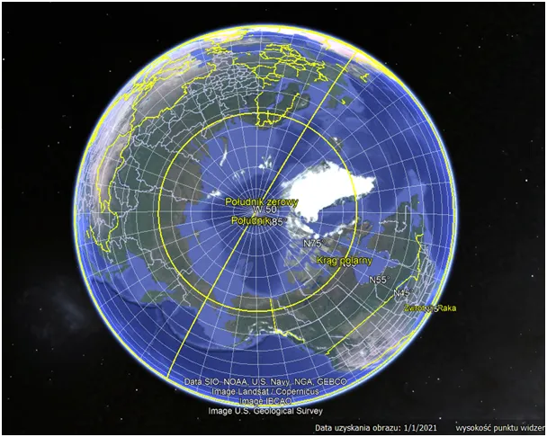
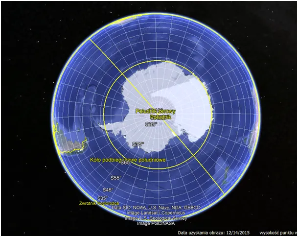
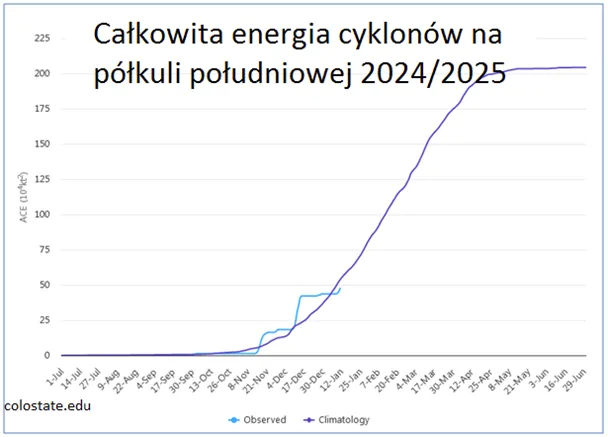
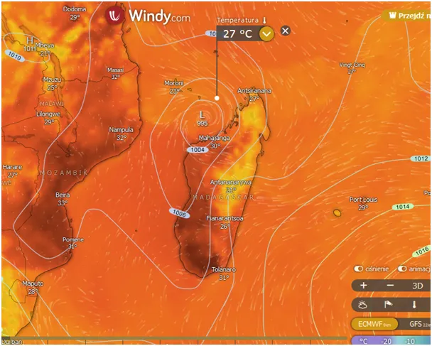

Sezon cyklonów na półkuli południowej rozkręca się zgodnie z planem. Studzenie oceanów trwa.
Na południe od równika kontynentów jest mało, a relacje oceany - kontynenty są odwrotne niż po naszej stronie. Tam światowy ocean na wysokości koła podbiegunowego nie ma żadnych barier i Prąd Subpolarny swobodnie krąży sobie wokół Antarktydy ze wschodu na zachód.

To jest idealny układ mechanizmu automatycznego chłodzenia Ziemi, gdy wody swobodnie się przemieszczają. Odwrotnie mamy np. w Zatoce Meksykańskiej, gdzie uwięzione gorące wody produkują masowo huragany i wspierają lądowe tornada w USA. Zgodnie z obserwowanym trendem ich energia co roku spada do czego przyczynia się w tym roku duże wychłodzenie Zatoki Meksykańskiej podczas ataków zimy u jej brzegów.


Na południowej półkuli mamy o połowę mniej cyklonów, przy czym na południowym Atlantyku prawie nie występują.

W tej chwili mamy idealny cyklon w Kanale Mozambickim obok Madagaskaru, przesuwa się on w stronę gorących wód, z których czerpie energię a zostawia za sobą ocean schłodzony o całe 4 st. C.

Będziemy go obserwować pod tym kątem. Burza już jutro rano stanie się cyklonem, a za 3 dni będzie tam wiało ponad 180 km/h. Z ponad 10 km wir wciąga wymrożone, suche powietrze może to być nawet do minus 50 st. C. Olbrzymi parasol ciepłych chmur wokół wiru oddaje w postaci podczerwieni nadmiar ciepła w przeraźliwie zimny Kosmos.
Dwa ważne teksty o tym: